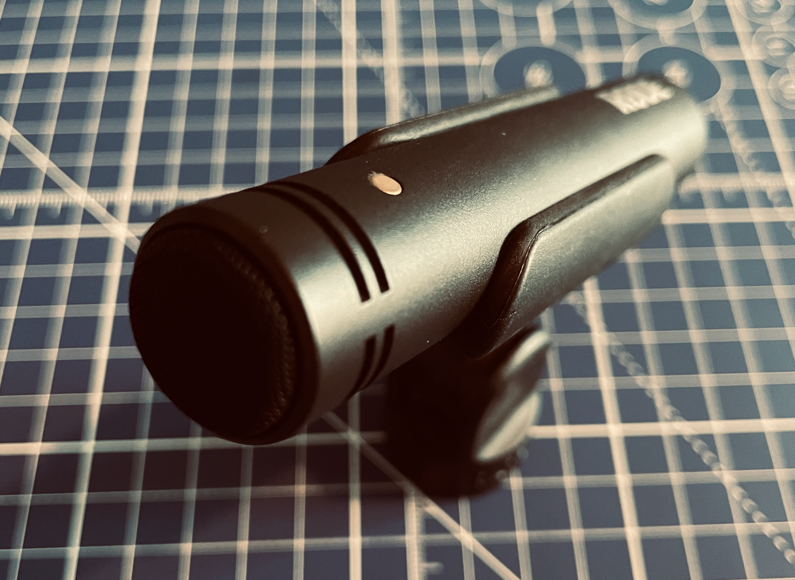
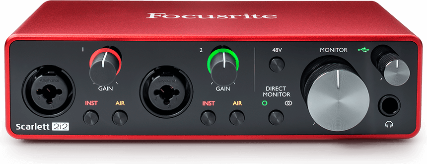
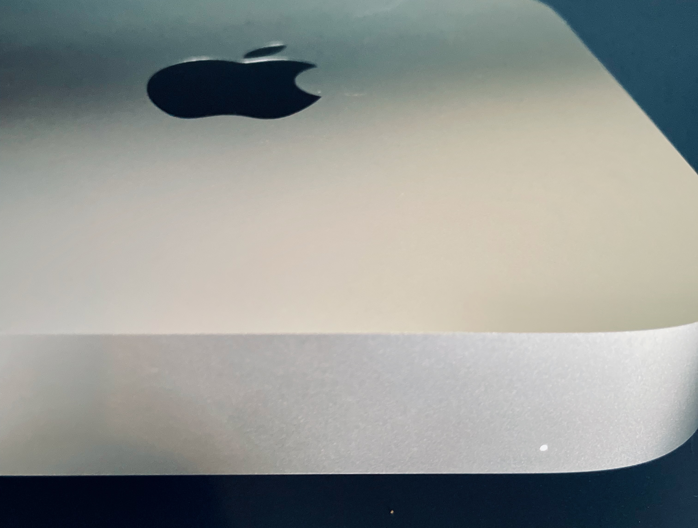
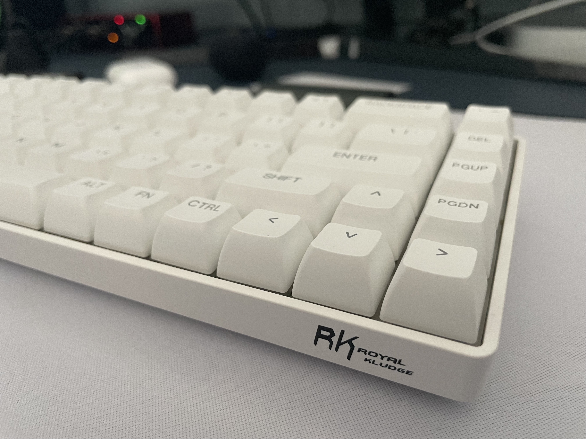

Ableton Live

Ableton Live is a digital audio workstation (DAW) that was used to record and edit the audio for our podcasts. It offers a wide range of features for recording, arranging, editing, and mixing audio, and is a popular choice for podcasters, musicians, and producers.
RØDE M5 Matched Pair of Compact 1/2" Condenser Microphones
Rode is a well-known brand of microphones that produces high-quality condenser microphones for a range of applications, including podcasting. We used Rode microphones to record our podcasts, and found that they delivered excellent sound quality.
Focusrite Scarlett 2i2
The record maker. 2i2 has brought studio sound to more artists than any other interface. Ever. Hook up a couple of mics, guitars or keys and record however you want.
Apple Mac Mini M2 Pro
The Apple Mac Mini M2 Pro is a powerful computer that was used to record, edit, and publish our podcasts. It offers fast processing speeds and a range of features that make it ideal for audio production.
Apple iPhone 12 Mini

The iPhone 12 Mini boasts impressive camera capabilities, capturing stunning photos with its dual-lens setup.
VS Code

Visual Studio Code (VS Code) is a code editor that was used to write the code for this website. It offers a range of features that make it easy to write and edit code, including syntax highlighting, code completion, and debugging tools.
GitHub Pages

GitHub Pages is a free hosting service provided by GitHub that allows you to host static websites directly from your GitHub repository. We used GitHub Pages to host this website, which makes it easy to update and maintain.
Royal Kludge RK68 Mechanical Keyboard
The Royal Kludge RK68 is a 65% mechanical keyboard that offers a compact and ergonomic design for a comfortable typing experience. I upgraded the keyboard by replacing the stock switches with Gateron Milky Yellow switches